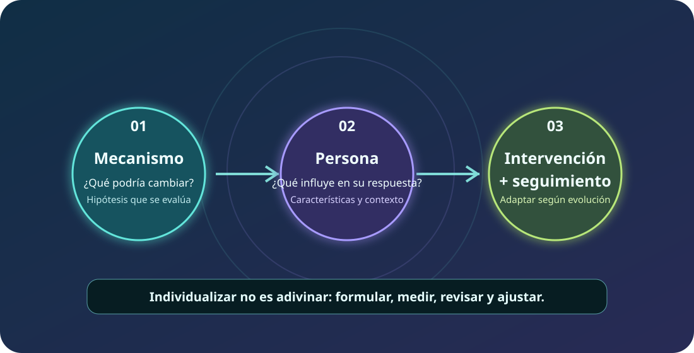

Intervención
Lo que se ofrece: ejercicio, educación, estrategias conductuales u otros componentes.
Una guía visual para pensar cómo actúan las intervenciones, qué características individuales pueden importar y cómo adaptar la atención sin prometer una personalización que la evidencia todavía no permite.
Explorar el recurso ↓Cashin y Sterling plantean que la rehabilitación puede mejorar si la investigación y la práctica clínica prestan más atención a los mecanismos que explican los cambios y a las características que podrían modificar la respuesta. El artículo es una perspectiva sobre prioridades y oportunidades; no prueba un nuevo tratamiento ni entrega un algoritmo clínico validado.

La imagen resume el enfoque propuesto. Las flechas son una forma de organizar el razonamiento, no una cadena causal confirmada para cada paciente.
Una intervención puede incluir componentes distintos —por ejemplo, ejercicio, educación y exposición gradual—. El análisis de mediación busca examinar si los cambios en un factor intermedio ayudan a explicar el resultado clínico.
Lo que se ofrece: ejercicio, educación, estrategias conductuales u otros componentes.
Un cambio posterior al tratamiento que podría participar en el efecto: capacidad, confianza, temor, estrés u otro factor medido.
Lo que importa para la persona: dolor, función, participación, sueño o actividad elegida.
Precaución: que dos variables cambien a la vez no demuestra que una haya causado la otra. La mediación causal depende de diseño, temporalidad, medición y supuestos estadísticos.
El artículo diferencia dos preguntas que suelen confundirse:
Describe riesgo de resultado. Por sí solo no dice cuál tratamiento será mejor.
Requiere comparar cómo varía el efecto del tratamiento entre perfiles; la evidencia sigue siendo limitada para muchas características.
En clínica: una señal de mayor riesgo puede justificar seguimiento más atento y una conversación más completa, pero no permite afirmar que una modalidad concreta sea la indicada.
Algunos modelos asignan atención de distinta intensidad según el riesgo estimado. El artículo resume resultados heterogéneos: ciertos ensayos mostraron beneficios y otros no añadieron beneficio frente a la atención habitual. Por eso, no basta con clasificar; también importa si existe una intervención eficaz y si el equipo está preparado para aplicarla.
Atención proporcionada a necesidades y metas, con autocuidado, actividad y seguimiento acordes al caso.
Explorar barreras y factores biopsicosociales, coordinar apoyos cuando se requiera y usar estrategias específicas para las necesidades detectadas.
Las intervenciones psicológicas integradas requieren formación y competencia; no se reducen a “dar consejos”.
Es una estructura educativa de razonamiento, no una pauta diagnóstica ni un protocolo validado por el artículo.
Una persona con dolor lumbar persistente presenta limitación para caminar, preocupación por el movimiento y dificultades para retomar su rutina. Una escala de riesgo sugiere posibilidad de recuperación más lenta.
Que puede ayudar a identificar necesidad de explorar y seguir ciertos factores pronósticos, según la herramienta y su contexto de validación. No determina por sí sola el diagnóstico, el mecanismo dominante ni el tratamiento óptimo.
La meta funcional de la persona, sus barreras y recursos, su experiencia con actividad y tratamiento, factores clínicos relevantes y qué opciones son viables. Después se acuerdan medidas para revisar la respuesta.
No. Una mejoría clínica es valiosa, pero no confirma por sí sola por qué ocurrió. Para probar mediación causal se requieren mediciones, temporalidad y diseños adecuados.
Cashin AG, Sterling M. Optimising physical rehabilitation for people with musculoskeletal pain. PAIN. 2025;166(11 Suppl 1):S131–S135. DOI: 10.1097/j.pain.0000000000003719. Registro bibliográfico en PubMed.
Este recurso resume y contextualiza un artículo de perspectiva. No es guía de práctica clínica, no establece dosis ni reemplaza evaluación profesional. Revisar el artículo original y la evidencia específica de cada intervención antes de tomar decisiones clínicas. Contenido educativo KineCheck · Octubre de 2026.
← Volver a la Biblioteca